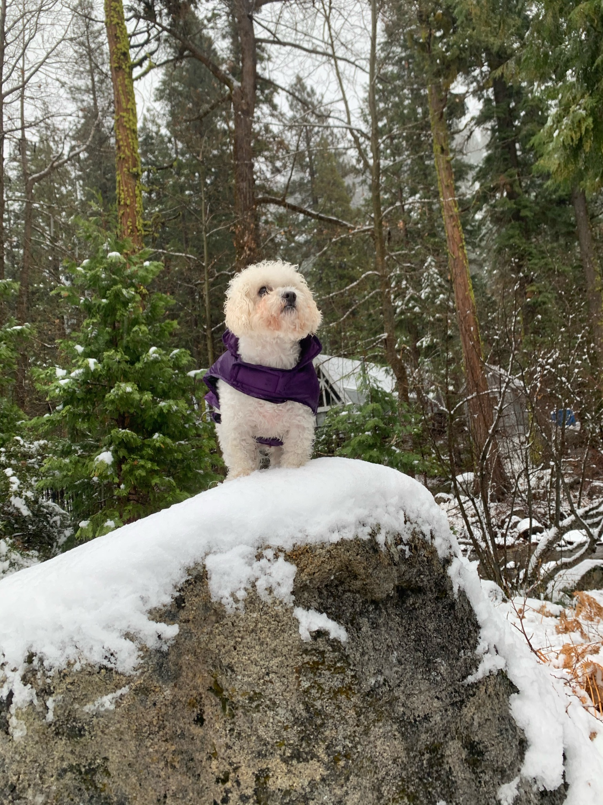
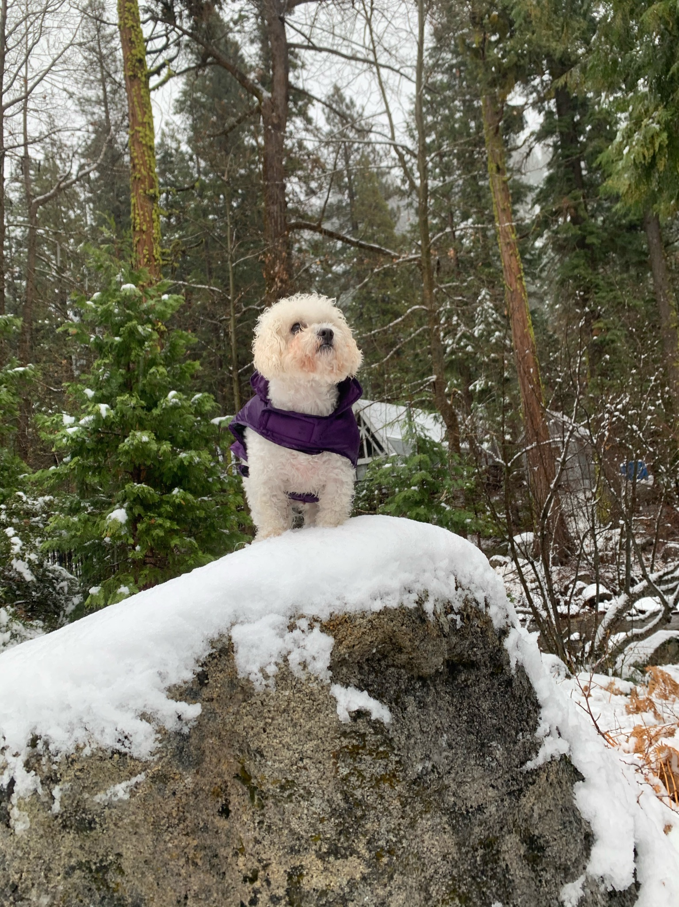
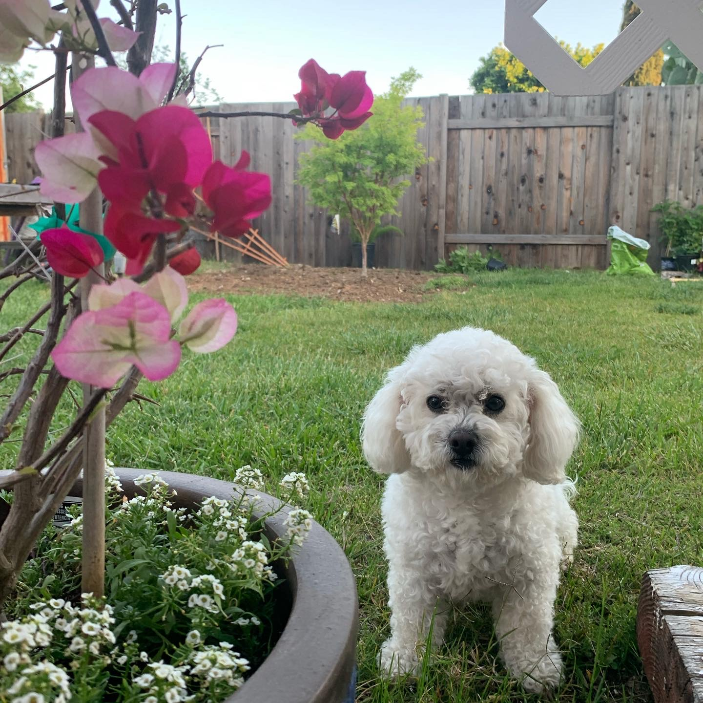
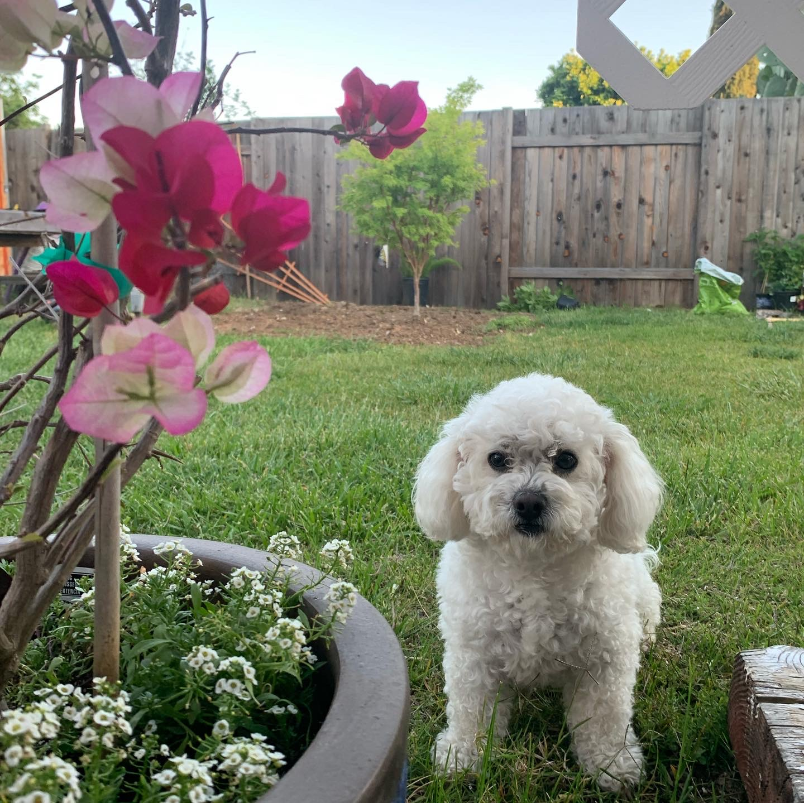

Golden Ties

About
Golden Ties is a short 2D platformer video game made for the Global Game Jam hackathon over the course of 72 hours. I worked with a team of 5 other undergraduate students to make it, focusing mainly on asset design with some involvement in narrative development. Our team consisted of talented programmers, graphic designers, and even a musician. We were each stepping out of our comfort zones in making a video game, but were eager to put together our diverse skills and try our hands at a medium close to our hearts.
:o
I worked mostly on art assets for the game alongside our other graphic designer. I made most of the discrete objects in the game and some of the background tiles, while our other graphic designer took charge of character designs and many of the scene tiles.
This project was my first experience with pixel art, a style of game art which presents the challenge of not only representing real-life objects with limited pixels but also thinking with historical conventions of pixel art in other video games to embed associative meaning into visual assets.


 

 
